PO7: Let there be light
Brainstormen
Deze keer heb ik de brainstorm in mijn eentje gedaan en die ook op papier gemaakt aangezien dat het makkelijkste was op dat moment. Ik heb hierbij gedacht aan kleuren, soorten verlichting, soorten lichten, onderdelen, materialen en ook verschillende merken. Dus wanneer ik een soort vorm van verlichting zou maken dan zou ik denken aan deze dingen. Ik zou ook natuurlijk denken aan de doelgroep, maar die heb ik hier niet bij geschreven op de brainstorm. Zie hieronder de brainstorm mindmap:
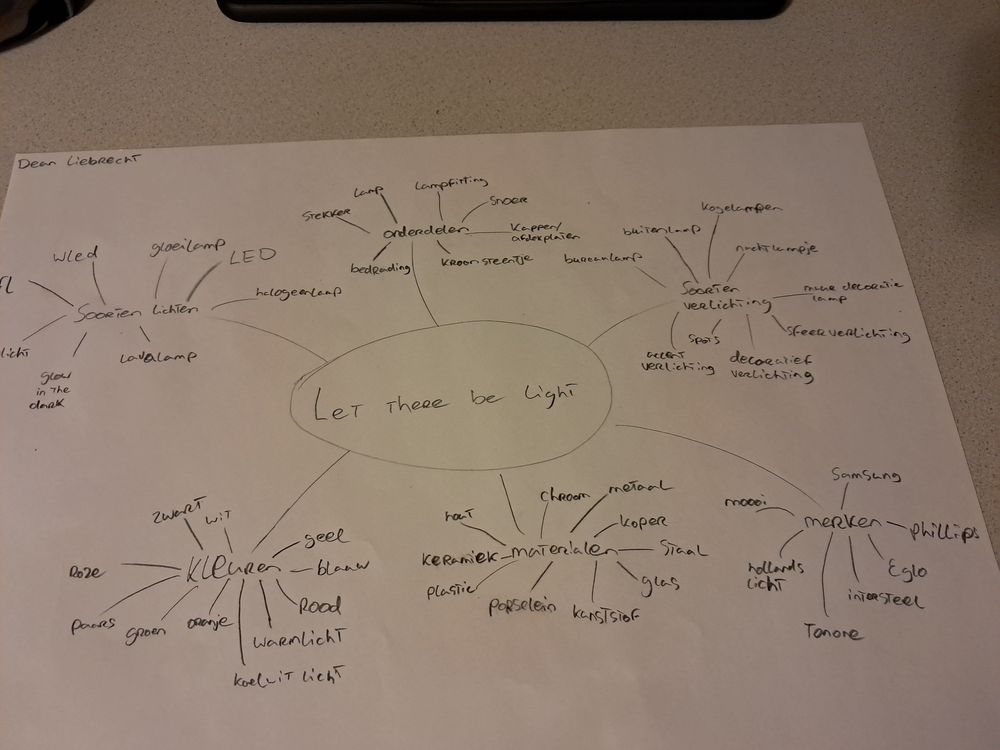 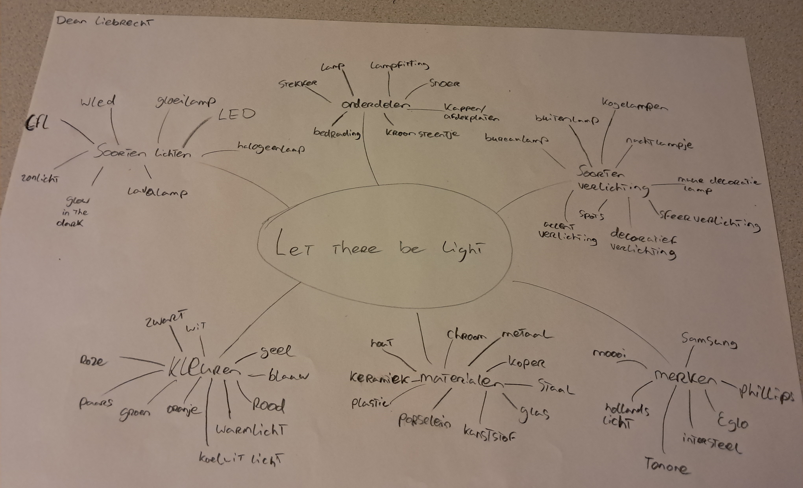 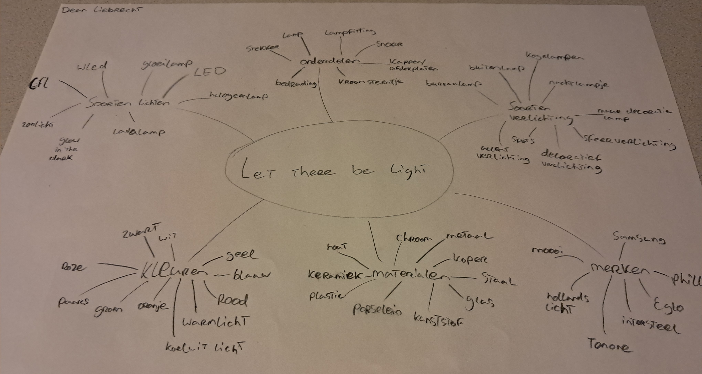
Marktonderzoek
Voor het marktonderzoek heb ik in pinterest een bord aangemaakt en daar 62 licht ideen die ik leuk vind in gezet. Sommige van de licht ideen zijn dan bijvoorbeeld ook van star wars omdat ik dat leuk vind en daar misschien iets mee will doen. Hier is de link naar het pinterestbord: https://pin.it/6ACJJYnbZ (PS: kopieer en plak de link als het niet werkt)
Bepalen invalshoek
Ik wil graag dat mijn lichtobject iets leuks en moderns wordt dat ik in mijn kamer zou kunnen hangen of zetten. Ik heb al meerdere ideeën waarbij ik ze allemaal iets meer dan alleen een lichtobject wil hebben. Ik wil dan graag een rustig en sfeervol lichtobject maken dat niet alleen bij 1 soort interieur kan maar bij meerdere zodat je er ook een beetje mee kan spelen. Ik heb dan ook al meerdere ontwerpen opgezocht en gezien tijdens mijn brainstorm waarbij ik echt iets meer rustig wil dan iets dat erg opvalt en druk is. Hopelijk wordt het dus een cool en rustgevend lichtobject dat ik in meerdere situaties en omgevingen kan gebruiken.
Ideevorming en Schetsen
1. Mijn eerste licht design is een licht stuk dat aan de muur hoort. Het is 1 groote plaat die aan de muur hangt met aan de randen wat gaten en LED's achter de plaat. Je kunt dit maken in verschillende vormen, verschillende materialen, en ook verschillende kleuren naar keuze. Dit zou best een mooie licht decoratie kunnen zijn in een moderne woonkamer.
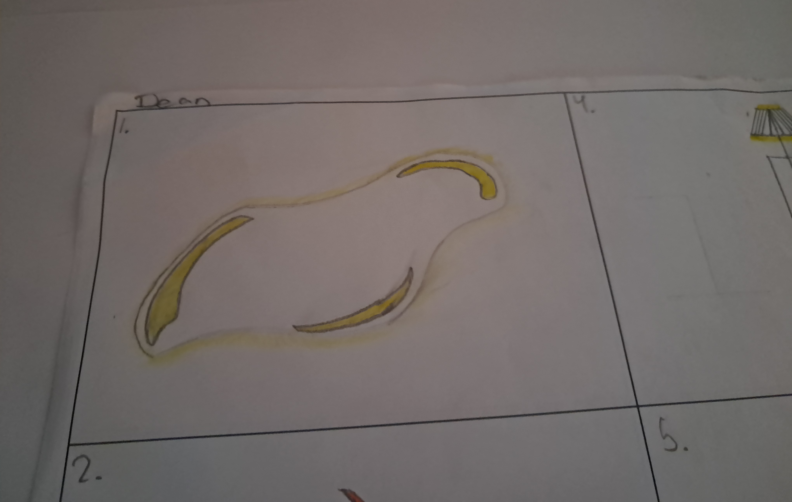2. Dit licht design is voor buiten aan de muur bedoeld, maar het kan ook zeker binnen in huis. Het stelt een vuur vlam voor waarvan de ene helft licht zal geven, en de andere helft van hard plastic of van roestvrij-metaal zal zijn. Als het buiten hangt dan moet het ook tegen neerslag en meerdere dingen kunnen weerstaan, daarom zal er ook een bescherm laag van doorzichtig kunststof. Als je dit combineert met het harde plastic of roestvrij-metaal, zal dit geschikt zijn als een decoratieve buitenlamp.
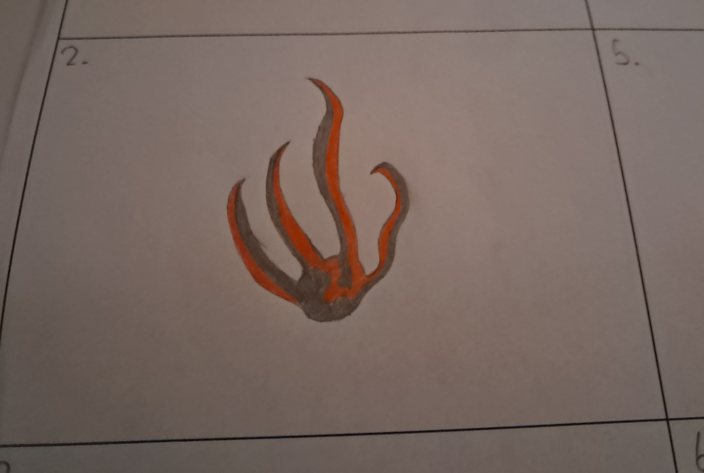3. Voor mijn derde licht design ben ik gegaan voor een meer decoratief licht stuk. Het zal een groote bal van licht zijn met maan-achtige metalen rand erom heen die je om de bol heen kan ronddraaien. In de omranding zal een glow-in-the-dark lijn zitten tussen de buiten randen die van hardplastic zijn. Overdag zal het dus als lamp fuctioneren en overnacht als een soort nachtlampje. Het moet ook een zon voor overdag en een maan voor 's nachts beteken. Ik ben nog niet helemaal uit over of ik de zon of de maan glow-in-the-dark maak en de zon of de maan het lampje, je kunt het ook nog omdraaien.
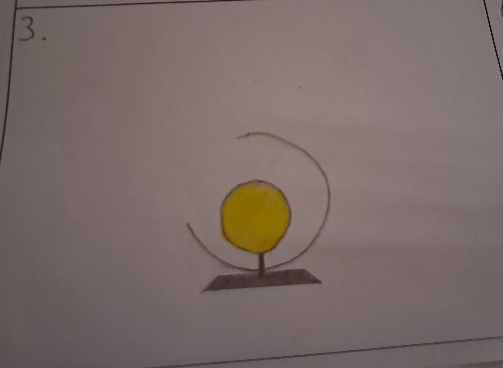4. Deze lamp zal dienen als een mooie lamp die in de hoek van de kamer staat om de gehele kamer te verlichen. Het zal dus 1 lang metalen lijn zijn met een lamp en lampenkap erop. De metalen lijn zal beginnen bij de lamp zelf en zal helemaal verbonden zijn aan de omranding die er blokig om heen zal gaan. De schets kan een beetje verwarend zijn, maar als je het goed kijkt dan zie je dat ik bedoel dat de omranding er in een vierkant om de middenlijn heen zal gaan. Het zal dus dan ook 1 lijn van metaal zijn waarbij aan het ene uiteinde de lamp zich zal bevinden.
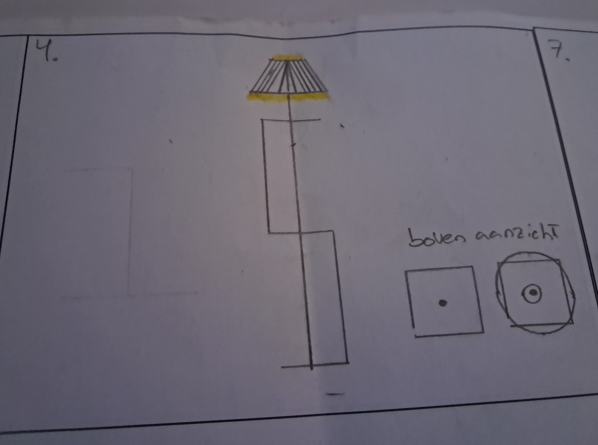5. Bij nummer 5 zie je een slang en een draak die als een bureaulamp dienen. De 2 lampen zullen van een sterk maar flexible materiaal worden gemaakt zodat ze dan kunnen worden verbogen tot een fijne stand, ik dacht aan een licht type metaal zodat je de gehele lamp kan van maken. Je kunt bij de draak de accessoires er dan makkelijk bij doen. Ik vind dit persoonlijk een leuk idee omdat het een metalen slang of draak zal zijn die dient als een bureaulamp, dit zal dan best een unieke decoratie zijn bij je bureau.
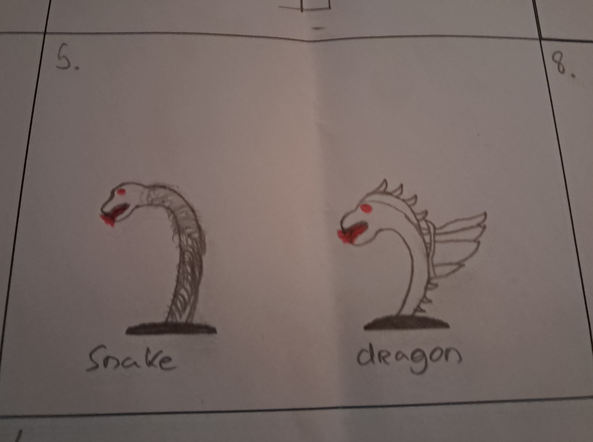6. Hier heb dacht ik aan een klein metalen mannetje waarbij zijn hoofd als lamp dient. Helaas toen ik meer over dit design ging kijken, zag ik dat er all heel veel versies van zijn. De mijne zou dan in een tuck-in positie zitten met zijn knieën richting het lampje. Ik ben niet de beste in 3-dimentionaal tekenen dus ik hoop dat je er een beetje het juiste beeld bij krijgt.
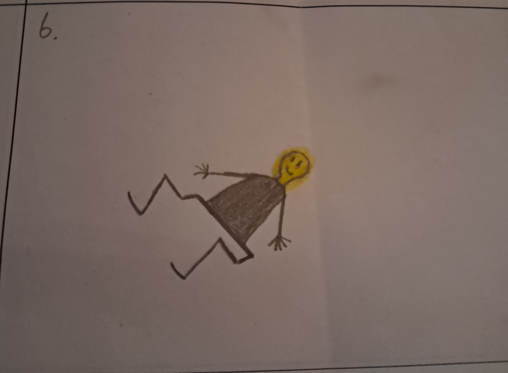7. Zoals je hier kunt zien ben ik bij mijn zevende design voor een meer klasiek en houterig design gegaan. Ik moest zelf een beetje aan een houten machine of aan de Middeleeuwen denken. Dit design is redelijk makkelijk om te maken aangezien het houten armen zullen zijn die met schanieren vast zitten zodat je de positie van de lamp kan aanpassen. De schanieren zou ik dan maken met een klein metalen stukje en hout erom heen dat een meer klasiek design weergeeft. Ook zal ik een glazen pot gebruiken als lampkap. Ik vind dit design een heel leuk en grappig design.
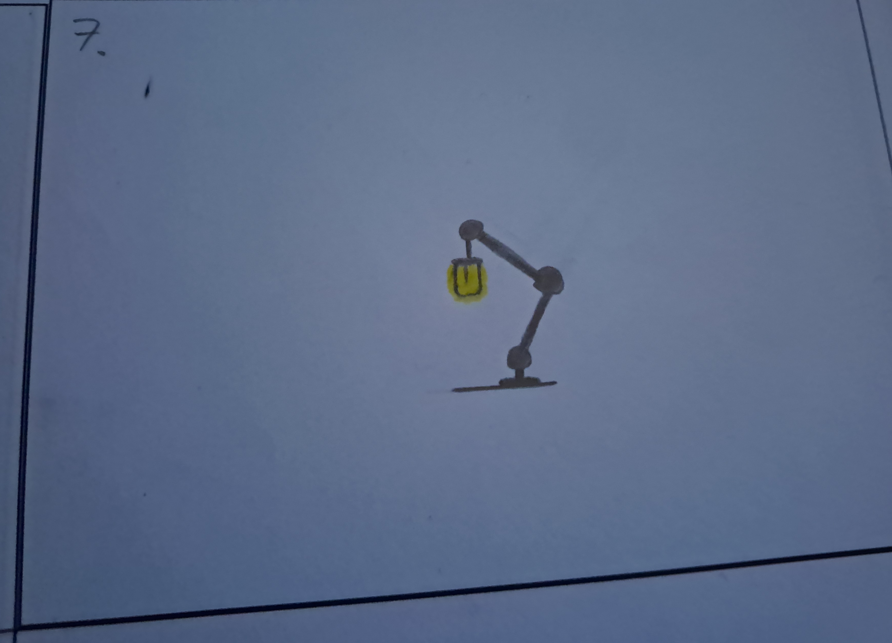8. Mijn laatste licht design zal ook weer een muurdecoratie zijn. Het zal een plaat zijn die een star wars logo vormt. Hierbij heb ik meerder ideeën die ik hierop kan uitwerken zoals meerdere houten lagen of 1 groten metalen plaat. Daar kan ik nog overna denken, maar ik weet wel dat net zoals bij de andere muurdecoratie de verlichting aan de achterkant zal zitten zodat het logo goed duidelijk te zien zal zijn wanneer je de verlichting aan doet. Ook dit vind ik een leuk en uniek design die ook wel bij mij past aangezien ik star wars leuk vind.
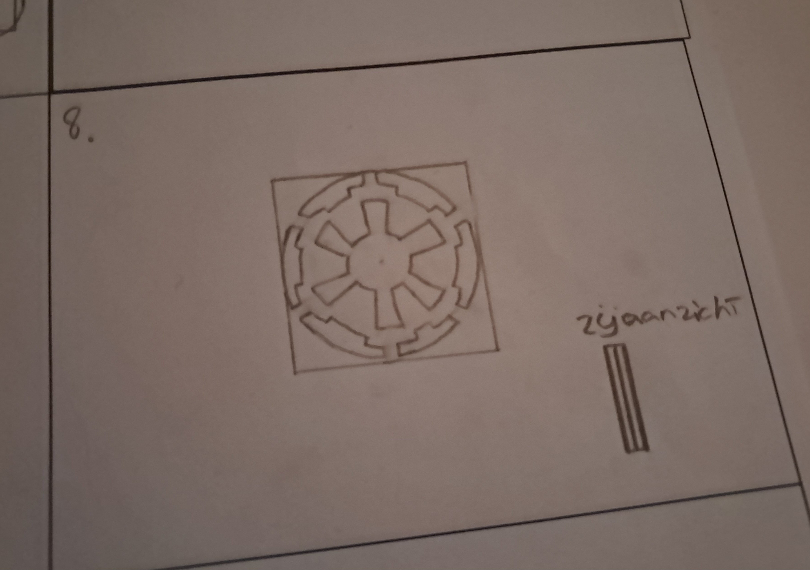Dit is mijn kleine schetspapier geweest waar ik eerst mijn gedachtes even snel schetste voordat ik ze verder ging ontwikkelen.
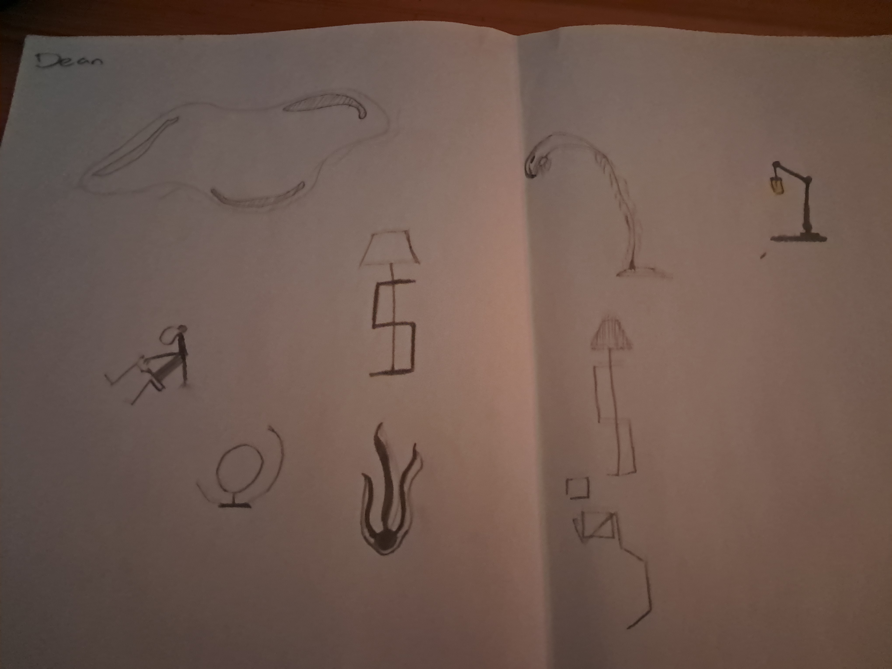Vormgeving
Nu ik een aantal ideeën heb ontworpen is het tijd om er eentje te kiezen die ik nog verder ga uitbreiden en ga maken. Ik vind er meerdere leuke ontwerpen tussen zitten maar degene die ik het leukst vind en die mijn invalshoek het beste omvat, is lichtobject nummer 1, deze ga ik dan ook verder ontwikkelen en misschien nog verbeteren. Ik heb besloten om dit ontwerp te gaan maken uit hout en ik zal het mooie organische vormen geven zodat het er rustig en cool uit zal zien. De volgorde van de stappen die ik zal ondernemen: Ik zal beginnen met de basisplaat uit hout te maken en de gaten in de plaat te doen. Dan zal ik de binneste omranding maken waar de LED's tegen aan komen te zitten, waarbij ik vervolgens de achterste plaat zal zagen uit hout. Nadat ik dat heb gedaan zal ik de voorkant van de basisplaat verven met een kleur die ik mooi vind en die rustgevend is. Als laatste zal ik alle delen samen lijmen met houtlijm en de LED's erop plakken. Dit zal de aanpak zijn van mijn process en ik neem mijzelf ook voor om zo veel mogelijk te doen en mijn tijd in de lessen zo verstandig mogelijk te gebruiken. Bij vorige projecten heb ik soms een les minder goed gebruikt dan dat ik zou kunnen, en dat wil ik graag bij dit project anders doen. Nu aan de slag en dan zal ik in mijn reflectie zien of dit allemaal gelukt is.
Foto's process
Hier zijn een paar foto's die ik door het hele process van het project heb gemaakt


Eindresultaat
Het Eindresultaat van dit project is erg goed gelukt naar mijn mening. Ik vind het er goed uitzien en ook ben ik er blij mee. Naast dit omvat het resultaat ook nog eens alle delen van de invalshoek die ik had bedacht waarbij je de delen ook allemaal weer terug ziet in mijn lichtobject. Het heeft mooie organische rondingen en meetingen, het oogt rustig, een mooie kleur, redelijk modern en het past goed in veel omgevingen maar het heeft nog meer opties als je ook maar de kleur aan zou passen. Hier zijn de foto's van het eindresultaat liggend op de grond.


Reflectie
Dit project was erg leuk en ik ben erg blij met hoe het is gegaan en met de uitkomst. Ik mocht eerst zelf mijn fantasie los laten gaan tijdens de ideevorming en het schetsen wat erg leuk was, en daarna heb ik ook nog 1 van die ideeën fysiek gemaakt wat ook erg leuk was. De basis dingen zoals brainstormen en marktonderzoek blijft het zelfde en daar had ik dan ook geen moeite mee. Ook het schetsen, zagen en de fysieke uitwerking gingen erg goed en dat was ook leuk om te doen. In dit project heb ik over verschillende soorten verlichtingen en mogelijkheden voor een lichtobject geleerd en dat het een best breed onderwerp is, maar daar langs heb ik voor de rest niet zo veel nieuws geleerd aangezien ik de rest al vaker heb gedaan of al wist. Als ik terug kijk op het project ben ik blij met hoe dingen zijn gelopen en hoe ik sommige dingen heb aangepakt. Zoals ik al had gezegd heb ik bij dit project echt alle tijd goed benutigd en ook zorgvuldig. Het eindresultaat heb ik nu verlopig thuis tegen de muur achter mijn computer staan en later zal ik het een plekje aan de muur geven. Het ziet er erg cool uit en ik ben blij dat ik nu een leuk lichtobject in mijn kamer heb, zie hieronder nog 2 foto's. Als ik terug kijk op het hele process en hoe alles is gelopen ben ik erg positief, zowel over het process als het eindresultaat. Van alle projecten die ik dit jaar heb gemaakt, vind ik deze het leukste en ben ik blij dat ik dit project heb mogen doen.
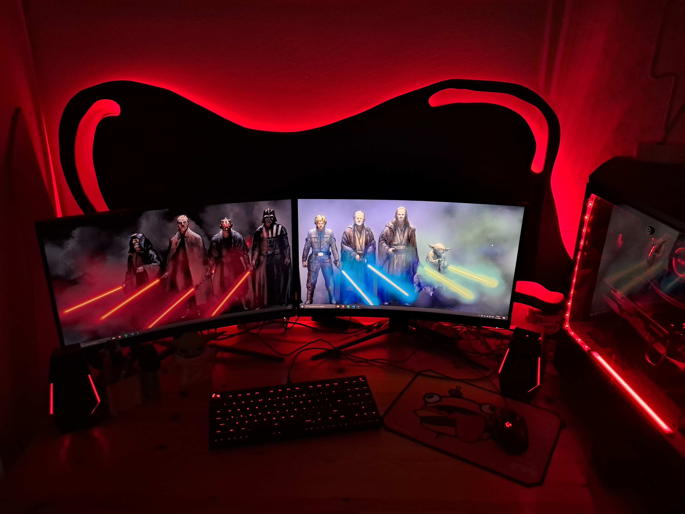 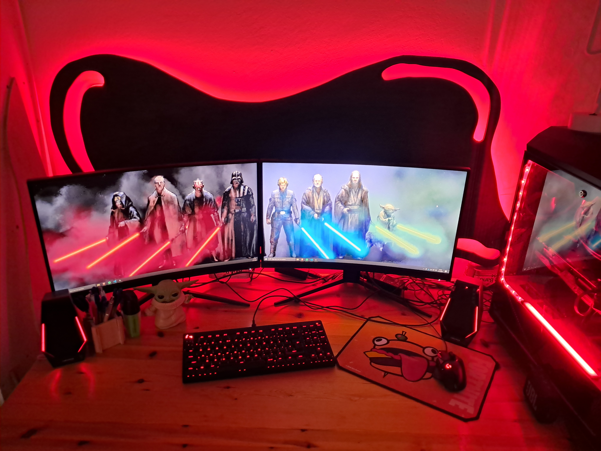